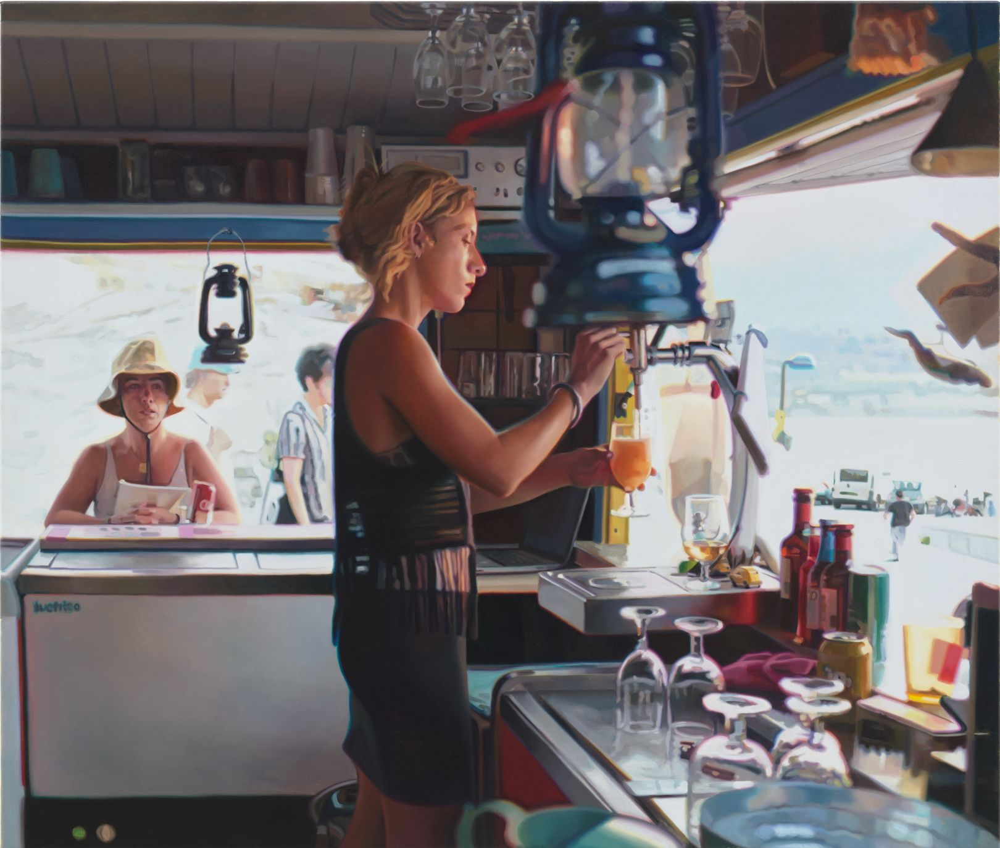

Hyperrealistic paintings by Kate Waters look like photographs of modern city life
by Katy Cowan

The creases of an unmade bed. The blurring lights of a city street after dark. A busy shop. At first glance, you might think you're looking at a printed photograph of modern life, perhaps captured in New York City or London. In actual fact, these images are paintings by Kate Waters, revealing an exceptional talent for hyperrealism.
The acclaimed artist's latest series, Apotheosis of the Real, goes on display at Galerie Voss in Düsseldorf on 27 August with each artwork as detailed and exquisite as the next. Although the subject matter might seem mundane, one can't help but imagine the fascinating narrative behind the photorealistic paintings.
So many of Waters' imagined scenes are plucked from our everyday lives: a quiet café with a lone man staring at his laptop, his face illuminated by the screen. A friend applying makeup in her messy Brooklyn apartment before a lunch date with a friend. A server in a busy roadside coffee shop, busily preparing lattes for her customers. These are paintings that might feel somewhat calm on the surface. But instead, they seem to speak of life's excesses and its contradictions; the treadmill we all recognise and are unable to escape from, whether we like it or not.
Waters' subjects are, of course, unaware of the camera focused on them. Just as people, in general, would be lost in their own worlds, not realising someone, somewhere is watching them with interest from afar. We've all been guilty of it: people watching. Waters clearly finds inspiration herself from the cafés, art galleries and city streets – London being the perfect base to spark new ideas for her artistic practice.
There isn't anything voyeuristically sinister about Waters' observations, as it's clear there's compassion for the subjects she paints. Though some of her oil on canvas works might suggest a little tongue-in-cheekiness with each title and theme sharing some humour or irony, others simply show a heartwarming love of life and people.
No matter how you interpret Waters' art, with all its soft realistic colour and delicious play on light and shadow, you will undoubtedly be transfixed by the incredible attention to detail and the hyperrealism of each of her works. Apotheosis of the Real launches at Galerie Voss in Düsseldorf on 27 August and runs until 23 October 2021.